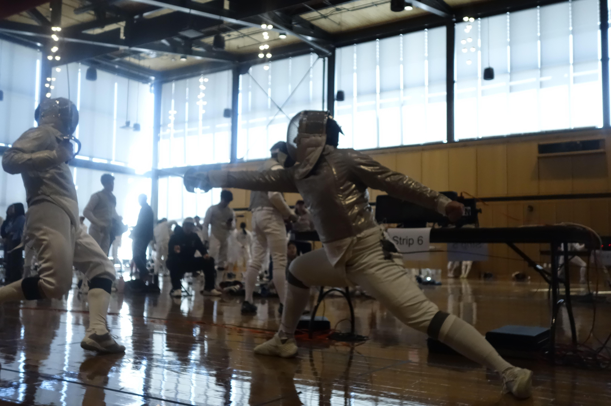

My Hobby: Fencing

Fencing is a sport I have come to love for its unique blend of physical fitness, mental focus, and tactical thinking. As one of the original sports of the modern Olympic Games, it carries a sense of timelessness, yet every bout feels incredibly immediate. It is often described as "physical chess" because it transcends mere athleticism; it is a high-speed negotiation of space and timing. Every second on the strip requires you to read your opponent’s subtle cues, decipher their intentions, and execute a counter-strategy in a split second.
The beauty of the sport lies in this duality. Physically, it demands explosive power, agility, and precise footwork. Mentally, it requires a level of composure that few other sports can match. You must remain calm under the pressure of an incoming attack while simultaneously looking for the smallest opening to launch your own. Whether I am at a routine practice or the heat of a national competition, fencing pushes me to stay sharp. It has taught me that success isn't just about speed; it's about the "tactical wheel"—knowing when to retreat, when to parry, and when to commit to a bold lunge.
This discipline has influenced my life beyond the club. The resilience needed to bounce back after a lost touch and the focus required to plan three moves ahead are skills that translate into my academic and personal pursuits. Every time I hook into the reel, I am reminded that fencing is a lifelong journey of refining both the body and the mind.
The Three Weapons
- Foil — target: torso; tip-only hits; right-of-way rules
- Épée — target: full body; tip-only; no right-of-way
- Sabre — target: upper body; edge and tip; right-of-way rules